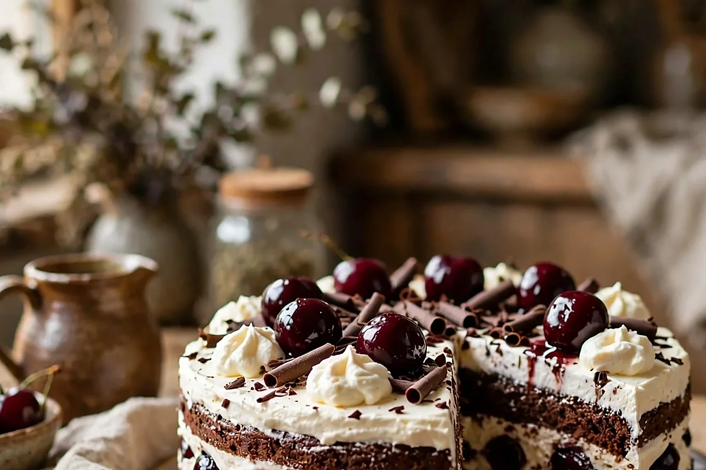

Schwarzwälder Kirschtorte – der Torten-Klassiker Schritt für Schritt
Sie ist die Königin unter den Torten: Schokobiskuit, saftige Sauerkirschen und Wolken aus Sahne. Eine Schwarzwälder Kirschtorte sieht nach Konditorei aus, ist mit etwas Ruhe und Geduld aber gut zu Hause zu schaffen. Für Geburtstage und Gäste ist sie immer ein kleines Fest.

Inhaltsverzeichnis
Zutaten
Zubereitung
- Den Backofen auf 175 °C Ober-/Unterhitze vorheizen. Den Boden einer Springform (26 cm) mit Backpapier belegen, den Rand nicht fetten.
- Eier, Zucker, Vanillezucker und Salz mit dem Handrührgerät ca. 8 Minuten hell und dickcremig schlagen. Mehl, Kakao und Backpulver mischen, auf die Eiermasse sieben und vorsichtig unterheben.
- Den Teig in die Form füllen und 25–30 Minuten backen (Stäbchenprobe). Den Biskuit 10 Minuten in der Form abkühlen lassen, dann stürzen und vollständig auskühlen lassen. Anschließend zweimal waagerecht durchschneiden, sodass 3 Böden entstehen.
- Die Kirschen abtropfen lassen, den Saft auffangen. 250 ml Kirschsaft mit Speisestärke und Zucker glatt rühren, aufkochen und kurz köcheln, bis die Masse andickt. Die Kirschen unterheben (12 Stück zum Verzieren beiseitelegen) und abkühlen lassen.
- Die Sahne mit Sahnesteif und Puderzucker steif schlagen. Den unteren Boden mit der Hälfte des Kirschwassers beträufeln, die Kirschmasse darauf verteilen und mit Sahne bestreichen.
- Den zweiten Boden auflegen, mit dem restlichen Kirschwasser beträufeln und mit Sahne bestreichen. Den dritten Boden auflegen und die Torte rundherum mit der übrigen Sahne einstreichen – etwas Sahne für Tupfen aufsparen.
- Die Torte mit Schokoraspeln bestreuen, 12 Sahnetupfen aufspritzen und je eine Kirsche daraufsetzen.
- Die Torte mindestens 4 Stunden, am besten über Nacht, im Kühlschrank durchziehen lassen und gut gekühlt servieren.

Tipp
Der Biskuit lässt sich am besten schneiden, wenn er einen Tag alt ist – einfach am Vortag backen, in Folie wickeln und am nächsten Tag füllen. Ein langes Sägemesser und langsame, drehende Bewegungen helfen beim Teilen der Böden.
📌 Mehr Rezept-Ideen findest du auf unserem Pinterest-Profil:
Lecker Rezepte auf Pinterest
Lecker Rezepte auf Pinterest